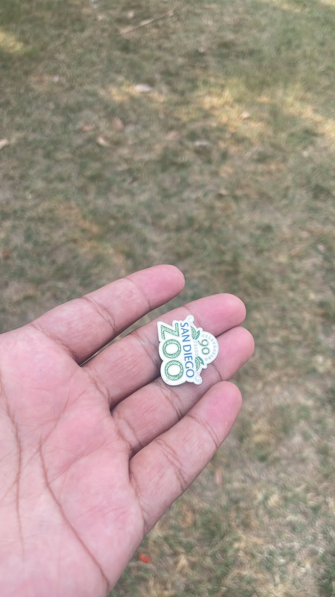
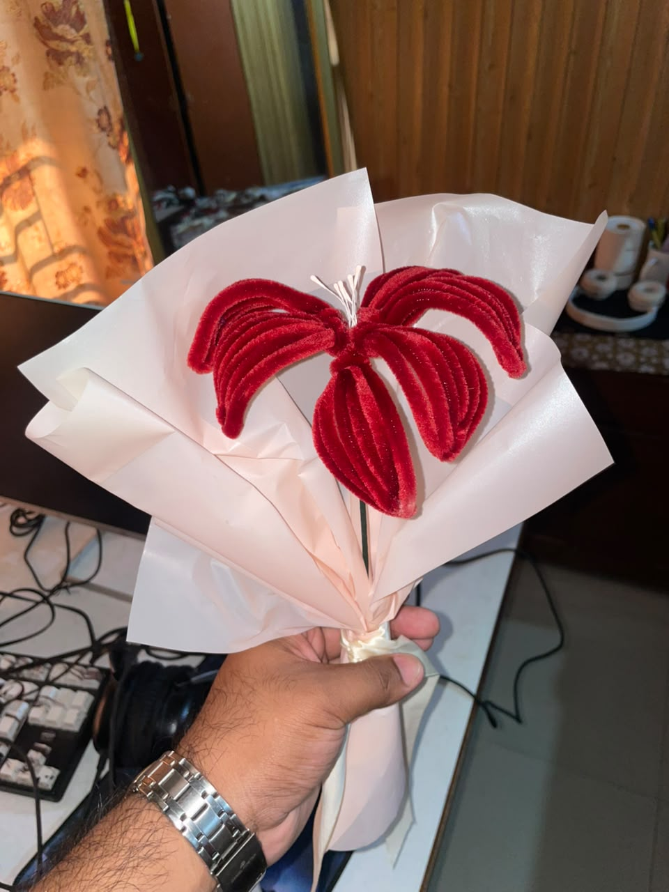
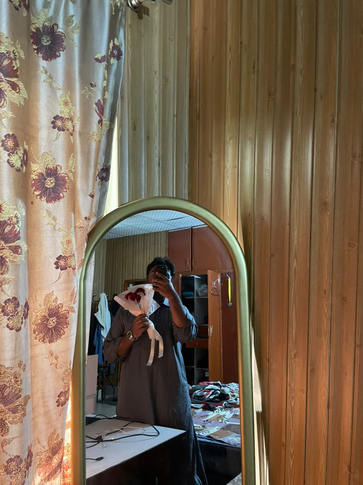
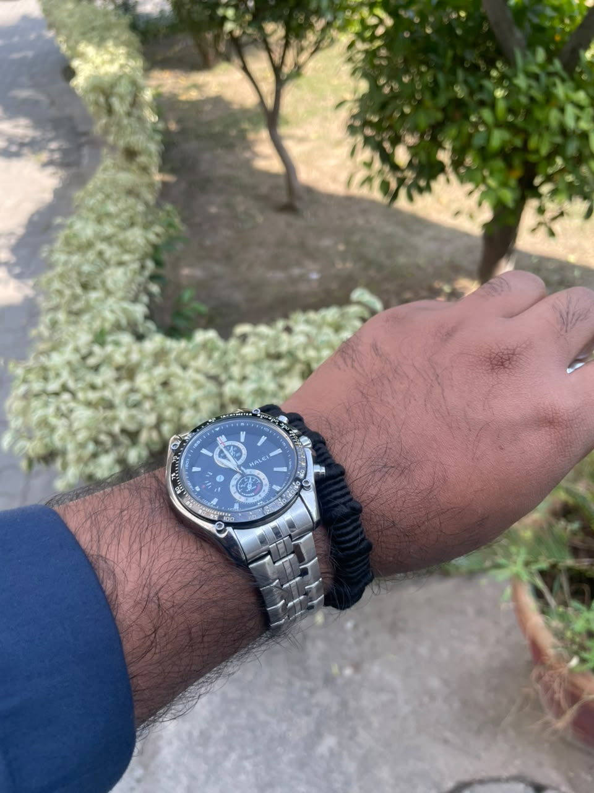
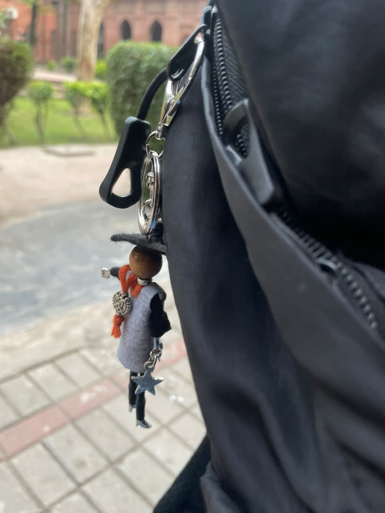
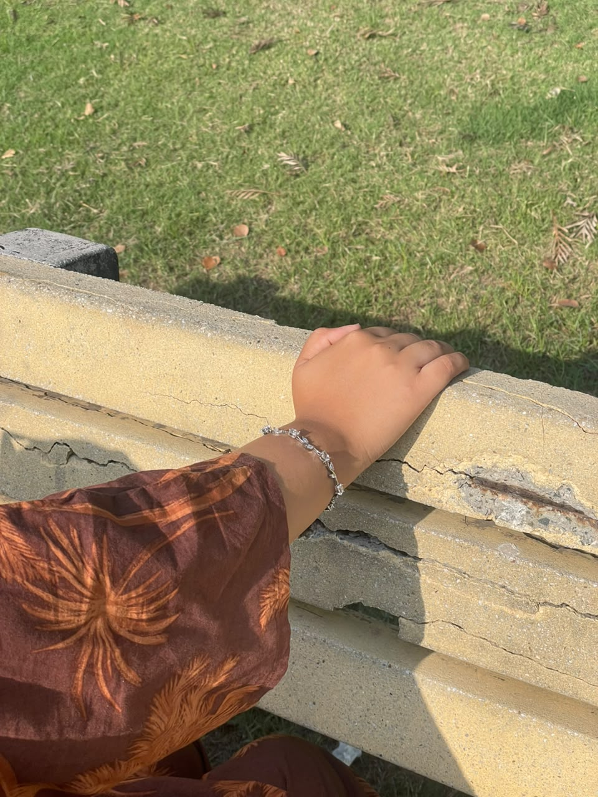
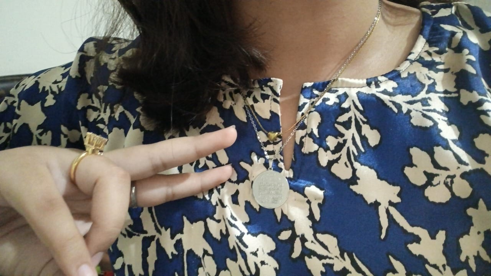

PHOTO 01 · CHAPTER 02
PHOTO 01 · CHAPTER 02A Little Something for You
FLIP TO READ ↗A LITTLE THOUGHT
A Little Something for You
A little keepsake, a familiar detail, and another reason this moment belongs in our story.
TAP TO TURN BACKCHAPTER 02 · A PAGE FROM OUR STORY
The little things make you extraordinary.
← BACK TO ALL CHAPTERSTEN LITTLE MOMENTS
Tap any card to turn it over. The photographs and videos are little pieces of our story.
PHOTO 01 · CHAPTER 02A little keepsake, a familiar detail, and another reason this moment belongs in our story.
TAP TO TURN BACK
PHOTO 02 · CHAPTER 02A little keepsake, a familiar detail, and another reason this moment belongs in our story.
TAP TO TURN BACK
PHOTO 03 · CHAPTER 02A little keepsake, a familiar detail, and another reason this moment belongs in our story.
TAP TO TURN BACK
PHOTO 04 · CHAPTER 02A little keepsake, a familiar detail, and another reason this moment belongs in our story.
TAP TO TURN BACK PHOTO 05 · CHAPTER 02
PHOTO 05 · CHAPTER 02A little keepsake, a familiar detail, and another reason this moment belongs in our story.
TAP TO TURN BACK
PHOTO 06 · CHAPTER 02A little keepsake, a familiar detail, and another reason this moment belongs in our story.
TAP TO TURN BACK
PHOTO 07 · CHAPTER 02A little keepsake, a familiar detail, and another reason this moment belongs in our story.
TAP TO TURN BACK PHOTO 08 · CHAPTER 02
PHOTO 08 · CHAPTER 02A little keepsake, a familiar detail, and another reason this moment belongs in our story.
TAP TO TURN BACK
PHOTO 09 · CHAPTER 02A little keepsake, a familiar detail, and another reason this moment belongs in our story.
TAP TO TURN BACK
PHOTO 10 · CHAPTER 02A little keepsake, a familiar detail, and another reason this moment belongs in our story.
TAP TO TURN BACKA LITTLE COLLECTION OF OUR MEMORIES
Every little gift carries a story of its own.